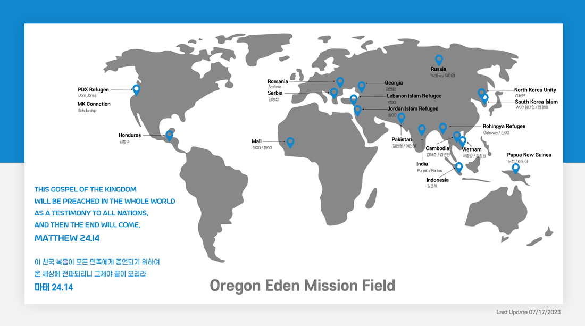
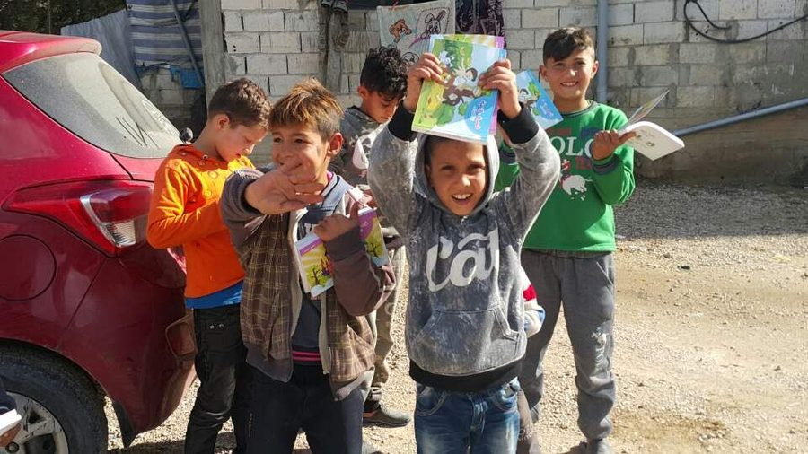
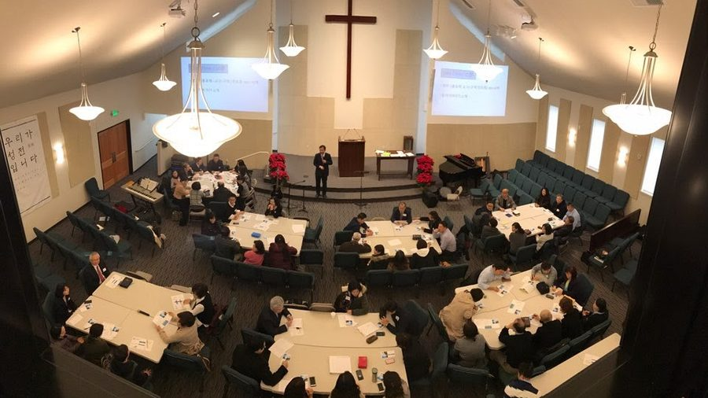
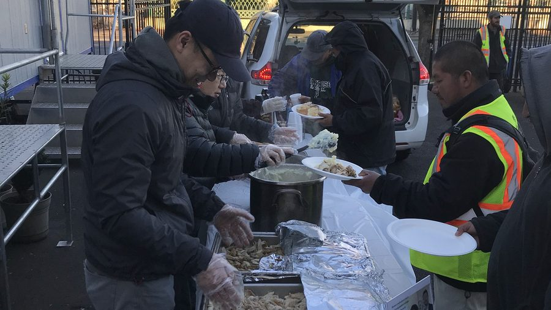
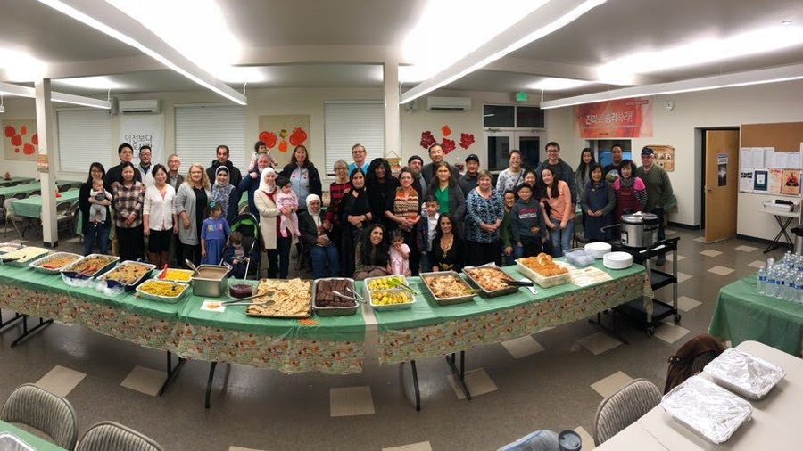

현장 사역 On the Field
20여 개 이상의 선교지와 선교사를 물질과 기도로 후원하며, 10/40 창에서 사역하는 선교사들과 동역합니다.
선교의 목적은 하나님을 영원히 즐거워하고 그분을 영화롭게 하는 창조의 목적을, 그 자리에서 벗어나 타락한 세상에 다시 회복하여 하나님께 영광을 돌리는 일입니다.
선교는 성경을 읽는 것에서 출발해 예수 그리스도의 지상명령을 이해하고, 성경의 가르침을 따라 성삼위의 이름으로 모든 민족과 백성으로 제자를 삼고 말씀을 가르쳐 지키게 하는 데 있으며, 이는 교회를 통해 수행됩니다. 따라서 교회의 목적은 선교이고, 선교는 교회를 통해 이루어지며, 그 열매는 성경을 따라 선교하는 또 하나의 교회입니다. 그래서 선교하는 교회는 오직 성경에 따라 스스로를 개혁하는 교회여야 합니다. 건강하지 못한 교회는 재생산하는 교회를 세울 수 없기 때문입니다.
그러나 선교의 주체는 삼위 하나님이십니다. 선교는 택하신 백성을 부르시는 것으로 이루어지며, 예수님과 복음의 유일성 위에 세워진 교회의 확장을 통한 하나님 나라의 확장으로 나타납니다. 하나님 나라는 보이지 않으나 실재하고, 종교적이 아니라 보편적이며 사회 정의와 공공의 유익으로 나타납니다. 성경에 근거한 자연법과 천부인권 사상에서 출발한 차별 없는 보편적 인권, 그리고 이를 보장하기 위한 법체계와 권력이 분립된 정부를 구성하는 헌법 국가의 출현이 그 대표적인 예입니다.
에덴 교회는 이러한 선교의 본질과 역사를 따라 해외 선교와 매년 9월의 선교대회, 그리고 지역과 이웃을 향한 긍휼과 구제로 섬기고 있습니다.
The church exists for mission, mission is carried out through the church, and its fruit is another church that sends. Since 1995, Eden Church has pursued Bible-based missions through the study of God's Word, prayer, and the support of missionaries — around the world and among our neighbors here in Oregon.
에덴 교회는 전 세계 20개 이상의 선교지와 선교사를 물질과 기도로 후원하며, 그중 온두라스와 루마니아에는 파송 선교사를 두고 있습니다.
20여 개 이상의 선교지와 선교사를 물질과 기도로 후원하며, 10/40 창에서 사역하는 선교사들과 동역합니다.
10/40 창에서 사역하는 선교사 자녀(MK)를 위한 사역을 후원하고, 난민 어린이를 위한 성경 보급에 중점을 둡니다.
교회의 각 구역이 선교지와 연결되어 소식과 기도제목을 나누고, 물질과 기도로 함께 후원합니다.

※ 각 선교지의 자세한 내용은 인터넷 보안과 선교 단체 · 선교사님들의 안전을 위해 삭제되었습니다.
Detailed information has been withheld for the online security and safety of our mission partners and missionaries.
2008년 과나까스데를 시작으로 2015년까지 해마다 단기선교팀을 보내 실리시오, 부에나 비스타, 로스 빠세스, 라스 브리사스, 라구나 이네아에 예배당을 건축하고 성경학교를 인도했습니다. 2013년부터는 현지 학생 장학사역 ‘현미(현존하는 미래)’를 시작해 아이들을 어려서부터 고등교육까지 지원하고 있습니다.
2025년 7–8월에는 ‘좋은 이웃이 되는 마음’이라는 주제로 연합 단기선교팀이 온두라스 Semilla Espiritual을 방문했으며, 같은 해 온두라스 코리아와 협력해 현지 학생 영어교육을 이어가고 있습니다.
From 2008 to 2015 our church sent yearly short-term teams to Honduras, building chapels and leading VBS in six villages. Since 2013 our scholarship ministry has walked alongside local students from early childhood through higher education, raising up leaders for their community.
전쟁과 박해로 삶의 터전을 잃은 어린이들에게 그들의 언어로 된 성경을 만들어 전합니다. 2016년 시리아 난민 어린이 성경을 시작으로, 중동 현지와 협력해 인쇄와 배포를 이어오고 있습니다.

2015년 새 예배당 입당과 함께 시작된 오레곤 · 밴쿠버 선교대회는 매년 9월 지역 교회연합과 함께 열립니다. 하나님의 섭리로 보내주시는 강사들의 말씀과 교제를 통해 선교의 방향과 구체적인 실천이 더욱 분명해지고 있습니다.

말씀에 따라 사회적 약자를 보호하고 돕기 위해, 지역의 난민과 집 없는 일용직 노동자, 도움이 필요한 청소년을 섬기는 사역을 성도들의 자발적 참여로 이어왔습니다.
밥(B.o.B) 사역과 난민 이웃 섬김 사역은 코로나 이후 교회 내부의 어려움으로 현재 잠시 멈춰 있습니다. 멈춘 것이지 끝난 것은 아닙니다. 에덴 교회는 하나님께서 다시 열어 주실 기회를 기다리며 이 이웃들을 위해 계속 기도하고 있습니다.
Our B.o.B and Local Refugee ministries are currently on hold following the challenges our congregation faced after COVID. They are paused, not ended — we continue to pray and wait for the Lord to open the door again.

따뜻한 밥 한 끼로 떡을 떼며 그리스도의 사랑을 나눈 사역입니다. 현재 잠시 멈췄으며 재개를 위해 기도하고 있습니다.

해마다 1,500명 이상의 난민이 오레곤에 도착합니다. 현재 잠시 멈췄으며 다시 동행할 날을 기다립니다.
2011년 제1회를 시작으로 2024년 제14차까지, 해마다 다음 세대 학생들의 배움과 성장을 격려하고 후원해 왔습니다.
밥(B.o.B) 사역은 따뜻한 밥 한 끼를 통해 떡을 떼며(사도행전 2:42) 그리스도의 사랑을 필요한 사람들에게 나누는 사역입니다.
코로나 이후 교회 내부의 어려움으로 밥 사역은 현재 잠시 멈췄 상태입니다. 다시 상을 차릴 수 있는 날을 위해 기도하고 있습니다.
오레곤에 한 해 1,500명 이상의 난민이 도착하고 있다는 사실을 아시나요? 1975년 이래 2018년까지 67,000명 이상의 난민이 오레곤에 도착했고, 많은 분들이 10/40 창의 국가에서 오신 분들입니다. 에덴 교회는 이 이웃들에게 그리스도의 사랑과 복음을 전하기 위해 지역 난민지원단체와 협력하여 2018년부터 이라크 난민 커뮤니티를 돕는 사역을 시작했습니다.
비버튼시가 주최하는 Welcoming Week의 일환으로 난민 및 지역 이주민 초청 음악회와 문화행사를 해마다 열었으며, 난민들과 함께하는 Field Trip, Harvest Party, Thanksgiving Dinner 등을 통해 이 땅에 찾아온 이웃들과 동행하는 삶을 살고자 노력해 왔습니다.
난민 이웃 섬김 역시 코로나 이후 교회 내부의 어려움으로 현재 잠시 멈췄 상태입니다. 이 이웃들을 잊지 않고, 하나님께서 다시 문을 열어 주실 때를 기다리며 기도하고 있습니다.
※ 사역의 자세한 내용은 섬김을 받는 분들의 안전과 보호를 위해 비공개임을 이해해 주시고,
문의는 jhrhew@hotmail.com으로 부탁드립니다.
Details are kept private for the safety of those we serve. Please contact us for more information.
지역의 영혼과 미전도 종족에게 복음을 전하며 주님 다시 오실 길을 예비합니다.
Sharing the gospel to the ends of the earth.